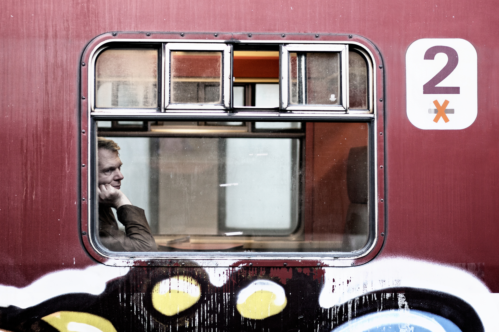

After coming back from Canada and restarting my freelancing I've ended up having a little money again. It's not much, but enough to start back doing something I've neglected for a long while and that is buying music.
I've spent the last several years building up my digital music collection, from the early days of buying CD's or having friends over and copying theirs, to Limewire, then copying entire hard drives and now it's torrents. Looking at the stats at the bottom of my iTunes window I can see that there are 905 artists with 1961 albums between them and 23,211 tracks overall. This is by no means a brag. In fact I went through and made a rough list of all the albums I would count as being my favourite albums–the ones I either own or would like to own. The figure came to about 250 albums. So I actually love and want to own 12% of the music on my computer.
That shocked me a little. Looking at the music in my library though I would say there's still a good 30-40% that I've not gotten around to hearing yet. Regardless it still seems like an inordinate amount of, as such, bulk. I questioned the albums I'd left out of my list. Past the music I didn't know was, mostly, music that I had out grown or bands that had one hit and I ended up with an entire album. There was also some "essentials" that I'd not really felt comfortable to delete. Even though I hadn't enjoyed them that much, they were good to have, for partys and the like.
After thinking this all through a spring clean of my digital library might do me good. Now that I'll buying all the good stuff I have, it's also time to evaluate what I don't feel is worthy of purchase and potentially get rid of it from my hard drive.
A man in a window
While thinking about all this I've realised that music has a changing value over time. Some albums are just golden from the day you first hear them; Morning View by Incubus, From Under The Cork Tree by Fall Out Boy, Way to Normal by Ben Folds, Strange We Should Meet Here by Idiot Pilot etc. There are other albums which I truly struggled with at first. I remember feeling almost guilty that I had spent €20 on the Gorillaz first album, but over time it grew on me and it was completely worth it. And then I have albums by bands like Good Charlotte, Nickelback or P.O.D. (yeah, I know) and these albums seem embarrassing to own now, but what's interesting is that I don't feel like they were a waste of money. Their value has dropped to pretty much zero as far as any discernable listening pleasure but they had their place. I'm guessing that even with the new music I'll be buying that I'll end up with a few duds, but that's all part of the experience.
There's something nice about seeing how you've changed or grown up over time and I think music is a really wonderful archive to read back through every now and then.